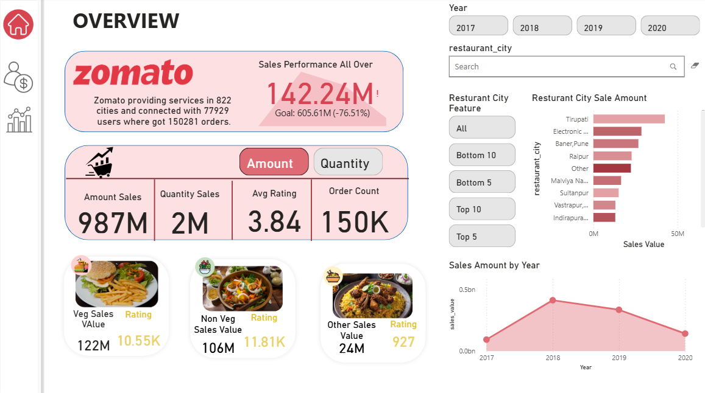

"Transforming raw data into restaurant-ready revenue strategies – one click at a time."
The Zomato Real-Time Analytics Suite is a fully interactive, real-time Business Intelligence dashboard built using Power BI with DirectQuery mode from SQL Server. This enterprise-grade solution delivers actionable insights into Zomato's operations across 800+ Indian cities.
The dashboard enables business teams to:
Built with live SQL integration (DirectQuery), this solution processes millions of data points to deliver sub-second response times for business users. The architecture supports real-time decision making with 20+ dynamic DAX measures powering the visual analytics.
DirectQuery mode ensures data is always current without manual refreshes, with optimized queries for performance.
Advanced calculations for YOY comparisons, user segmentation, sales targets, and performance tracking.
Instant visibility into key metrics like active users, order volume, revenue growth, and regional performance.
Hierarchical navigation from country → city → restaurant level with consistent metric tracking.
Context-aware titles, KPIs, and charts that adapt to filter selections automatically.
Predefined business targets (e.g., +18% sales growth) with visual indicators for performance against goals.
This dashboard provides an in-depth analysis of Zomato's user base, helping stakeholders understand how users interact with the platform.
Track total, active, and inactive users with demographic segmentation by age and gender.
Compare user acquisition and attrition trends year-over-year with visual indicators.
Monthly Active User trends with seasonal pattern analysis and cohort retention metrics.
Focused on revenue performance and product demand, segmented by time, region, and food category.
Current vs Previous Year performance with growth percentage indicators.
Veg vs Non-Veg contribution to overall sales with trend analysis.
Visual progress against predefined sales targets with variance analysis.
Geographic performance insights helping Zomato understand regional dynamics and optimize operations.
Instant identification of high-performing and underperforming regions.
Service quality analysis by city with drilldown to individual restaurants.
User acquisition trends mapped geographically with saturation indicators.
| Feature | Technology Used |
|---|---|
| Data Source | SQL Server (DirectQuery Mode) |
| Visualization | Power BI Desktop / Service |
| Data Modeling | DAX (Data Analysis Expressions) |
| Interactivity | Slicers, Bookmarks, Buttons |
| Deployment | Power BI Web Service |
Reported ₹15.2M in revenue (2020) with an average rating of 4.3★
Gained 2,000+ new users in metro cities through targeted campaigns
Urban Eatery topped revenue contribution charts across multiple quarters
Non-Veg items made up 58% of total orders in Tier-1 cities
Index Page
About Dashboard
User Engagement
City Analytics